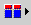

Use this window to set up a new restriction filter or edit the settings of an existing restriction filter.
Complete this window as follows:
- Name
- Type a unique name for the restriction filter. Tip: When creating ObjectServer objects, their names must begin with an uppercase or lowercase letter, followed by uppercase or lowercase letters, numbers, or underscore (_) characters, up to 40 characters in length. User, group, and role names can be any text string up to 64 characters in length and can include spaces. Names of ObjectServer objects are case-sensitive.
- Database
- Select the database for which you are creating the restriction filter.
- Table
- Select the table for which you are creating the restriction filter.
- Condition
- Type the SQL condition (WHERE statement) for the restriction filter.
For example:
If this condition is applied, to a user or group, the user or group members are allowed to see alerts in the event list only if they occur more than 100 times and have a severity greater than or equal to 4. You can use the SQL helper buttons to help you create the filter condition, as described in the following table.Tally > 100 AND Severity >=4Table 1. Buttons for creating filter conditions Button Description Columns Click this button to select a table column name to add to the command. The column name is substituted for the corresponding event list row value when the tool runs. Conversions 
Click this button to select from a list of available conversions. Complete Click this button to bring up a list of keywords that complete the entered SQL.
Tip: Alternatively, type one or more characters and then press Ctrl+F1 to obtain a dialog box with a list of keywords that might match your entry. Select the required keyword and click OK to complete your entry. If only one keyword matches your typed characters, the keyword is automatically completed for you. If you press Ctrl+F1 after typing a database-related keyword, the dialog box provides a list of possible ObjectServer databases from which you can select. If you press Ctrl+F1 after typing a database name followed by a dot (for example: alerts.), you can press Ctrl+F1 again to view and select from a list of tables in the database.Check SQL Click this button to check the validity of the entered SQL syntax. - OK
- Click this button to save the restriction filter details and close the window. New restriction filters are added to the Restriction Filters pane.
- Cancel
- Click this button to close the window without saving your changes.